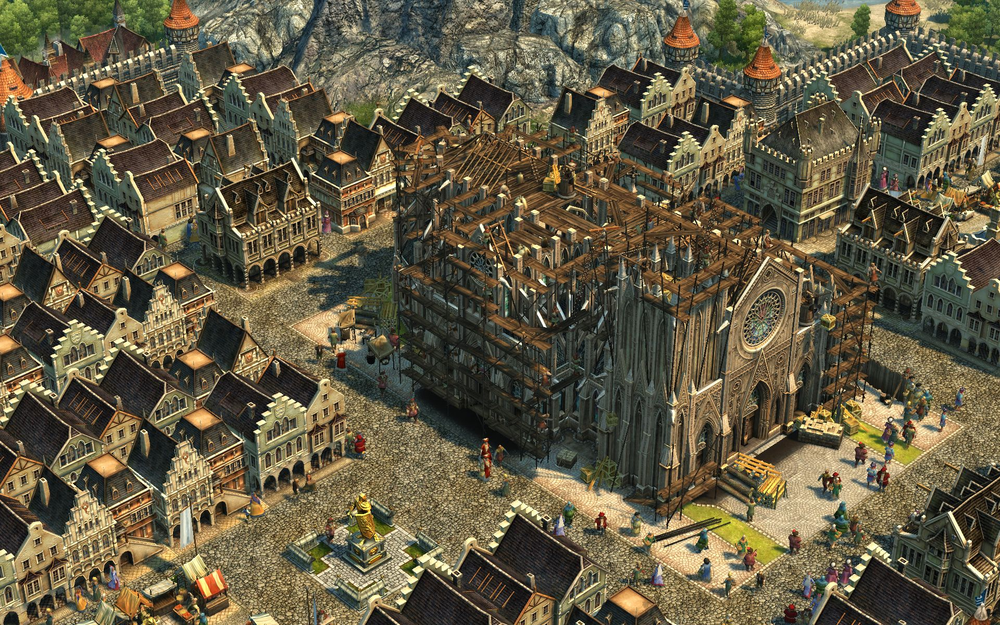

Über das Spiel
Anno 1404 erschien 2009 und gilt vielen Fans als einer der besten Teile der Serie. Die Mischung aus Aufbau, Handel, Diplomatie und der stimmungsvollen Grafik sorgt bis heute für eine treue Fangemeinde.
Besondere Features
- Einführung des Orients als zweite Kultur
- Komplexe Produktionsketten wie Glas, Mosaik oder Bücher
- Beeindruckende Städte mit Kathedralen und Moscheen
- Viele Story-Kampagnenmissionen